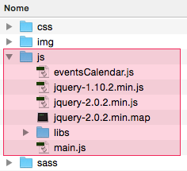

Este documento esclarece todas as diretrizes necessárias ao(s) desenvolvedor(es) responsável(is) visando atender qualquer alteração necessária no projeto ou, simplesmente, o contínuo desenvolvimento do mesmo.
Aqui também estão descritas a estrutura de diretório do projeto, as marcações semântica do HTML, as regras de estilos (CSS) e as lógicas de funcionamento dos scripts (js).
Detalhes gerais do Projeto
Nome do Projeto
Calendário Formação de Docentes (Workshops,Treinamentos e Eventos em geral)
Diretório de gravação do Projeto
Material armazenado no seguinte endereço: /Applications/MAMP/htdocs/projetos/PortalDEA/calendario-formacao-docentes.
Backup da última versão deste projeto esta sendo armazenada em: smb://servidor-82/TAI-DEA$/Administrativo/Pastas Individuais/RodrigoFS3/PortalDEA/calendario-formacao-docentes.
Requisitos míninos do Projeto
Responsive web design (RWD); Cross-browser compatível com todos os browser que recebem suporte do Blackboard (veja lista).
Metas do Projeto
Facilitar a consulta e a inscrição em workshops, treinamentos e eventos oferecidos aos professores tanto institucionalmente quanto pelos diferentes programas.
Requisitos
As tecnologias utilizadas no desenvolvimento deste projetos foram:
Para adequar-se as boas práticas de desenvolvimento web a organização do conteúdo esta dividido em dois grupos:
html: Local de armazenamento dos conteúdos de desenvolvimento front-end;
layouts: Local de armazenamento dos GUI (graphical user interface) do projeto;
Obs: demais conteúdos complementares podem ser adicionados no projeto em outros diretórios. Recomenda-se identificar tais conteúdos avulsos com o sinal de "_" (underline) no início do nome.
Diretório raiz do projeto.
Diretório html
Responsável para armazenar os conteúdos do desenvolvimento front-end (assets) e para arquivar as páginas dos eventos de cada departamento do Insper.
Obs: Pode ser necessário adicionar novas categorias/departamentos, basta adicionar a pasta com o nome do departamento. Recomenda-se utilizar os critérios de nomenclatura adotados nos padrões de Friendly URLs.
Estrutura do diretório html aberta. Estrutura dividida entre dois grupos: assets (conteúdos relacionados ao desenvolivemento front-end) e os nomes dos departamentos (categoria, áreas responsáveis) dos eventos institucionais.
Diretório layouts
A organização dos materiais de direção de arte contém o diretório psd para armazenar os aquivos fontes e o diretório img para armazenar o arquivo final, para este caso recomenda-se adotar um padrão de controle de versões ficando a critério do desenvolvedor.
Estrutura do diretório layouts.
Gerenciamento das páginas HTML's
Nesta seção será descrita as diretrizes referentes as páginas html's do projeto.
Diretório e rotulagem
As páginas html's ficam armazenadas dentro do seu respectivo departamento de referência. O rotulagem segue os padrões de Friendly URLs contendo o nome completo do evento.
Diretório e rotulagem dos html's do projeto.
Marcação semântica
Visando atingir uma alta perfomance nas páginas HTML's do projeto foi adotado algumas medidas para evitar o máximo possível de redundância e complexidade com os vários elementos da página. A seguir algumas diretrizes recomendada para o desenvolvimento de novos conteúdos.
Exemplo de aplicação dos requisitos mínimos de marcação semântica no projeto para alcançar um html de alta perfomance.
Validação
Procure sempre validar as páginas html para manter um padrão de Web Standards
Exemplo de uma das páginas html's validada pela W3C.
Gerenciamento dos arquivos CSS's
Nesta seção será descrita as diretrizes referentes aos arquivos css's do projeto.
Diretório e organização dos arquivos CSS's
O local de armazenamento dos arquivos CSS's é o diretório SASS (linguagem de extensão de css). Neste diretório temos o armazenamento do arquivo raiz main.scss além de outros adicionais para conteúdos de impressão e bug fix (hacks para IE).
O diretório layout contém o arquivos SCSS responsável pela geração de todos os estilos da página. E para eventual necessita de adicionar complementos no projeto, o diretório plugins foi criado.
Para utlizar o diretório plugins é necessário que o css esteja convertido em formato scss! (Veja como fazer)
Diretório geral de organização dos arquivos fontes do CSS's
Gerando os arquivos CSS's
No terminal acessar o diretório raiz do projeto localizado em: /Applications/MAMP/htdocs/projetos/PortalDEA/calendario-formacao-docentes/html/assets/sass
Execução no terminal para o acesso ao diretório geral dos arquivos CSS's
Digitar o comando a seguir:
Para mais detalhes sobre os comandos de gerenciamento do COMPASS/SASS acesse a documentação da plataforma, ou digite o comando compass --help.
Verificando status de compilação. A cada alteração/edição nos arquivos .scss é gerado automaticamente os arquivos .css no seu respectivo diretório:
Status indicando que o arquivo _layout.scss foi alterado e consequentemente o arquivo main.css foi atualizado.
Para interromper a compilação automática dos arquivos .scss pressionar Command + C.
Obs: A compilação dos arquivos SCSS's são automaticamente inseridos no diretório CSS, criado nas configurações do SASS conforme imagem abaixo:
Configuração do diretório SASS.
Gerenciamento dos arquivos JS's
Nesta seção será descrita as diretrizes referentes aos arquivos .js's do projeto.
Diretório e organização
O diretório raiz armazena os scripts da biblioteca jQuery (a versão mais atualizada do momento da criação deste documento); script para inserir eventos no calendário; e o script de gerenciamento do projeto.

Diretório e organização dos arquivos .js
Gerenciando eventos no calendário
Qualquer alteração nos eventos do calendário é necessário editar o arquivo eventsCalendar.js localizado no diretório js dentro dos assets do projeto. O script esta escrito em notação de objetos javascript.
Para melhor entendimento das opções disponíveis de edição de eventos consultar a documentação do projeto.
Organização e otimização dos scripts (jQuery)
Para ajudar nossos scritps a ficarem mais organizados procurando sempre ter ganho na qualidade perfomática dos mesmos, recomenda-se seguir estas diretrizes:
Responsável pelo armazenamento de plugins do projeto. Ao utilizar novos plugins fazer referência ao arquivo .js minificado.
Exemplo de link de bibliotecas de plugins em versão minificado.
Local de upload dos materiais no Blackboard
Local para realizar o upload do diretório encontra-se na plataforma Blackboard ® conforme imagem a seguir:
Local de armazenamento do Blackboard dos materiais do projeto
Recomendações de uso
Continue o desenvolvimento de produção de novos eventos mantendo a estrutura de diretórios e a regra de rotulagem descritas neste material;
Evite alterar a URL raiz do Projeto, localizado atualmente no endereço: https://insper.blackboard.com/bbcswebdav/institution/DEA/calendario-formacao-docentes/...
As regras/estrutura de marcações, estilos e scripts possuem comentários locais para melhor entendimento. Em caso de mudança ou adaptação do código adicionar comentários adicionais;
Os códigos de cores para identificação dos departamentos neste projeto foram baseados na identidade visual da instituição, segue o mesmo critério para a expansão da paleta cromática na eventual necessidade de inserir novos departamentos.